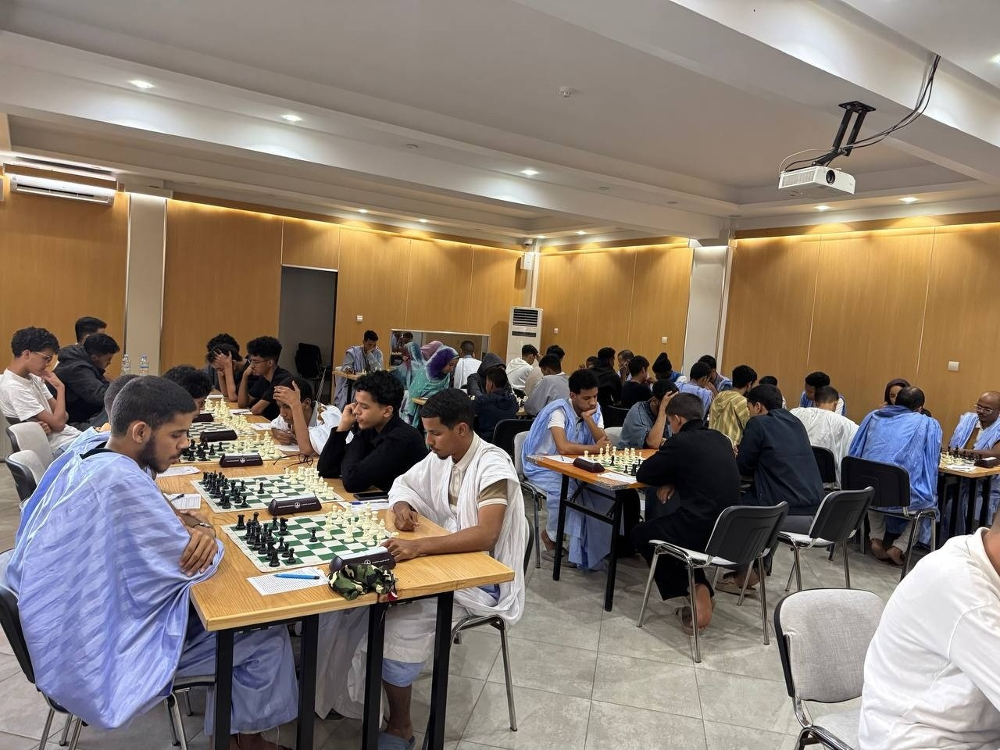
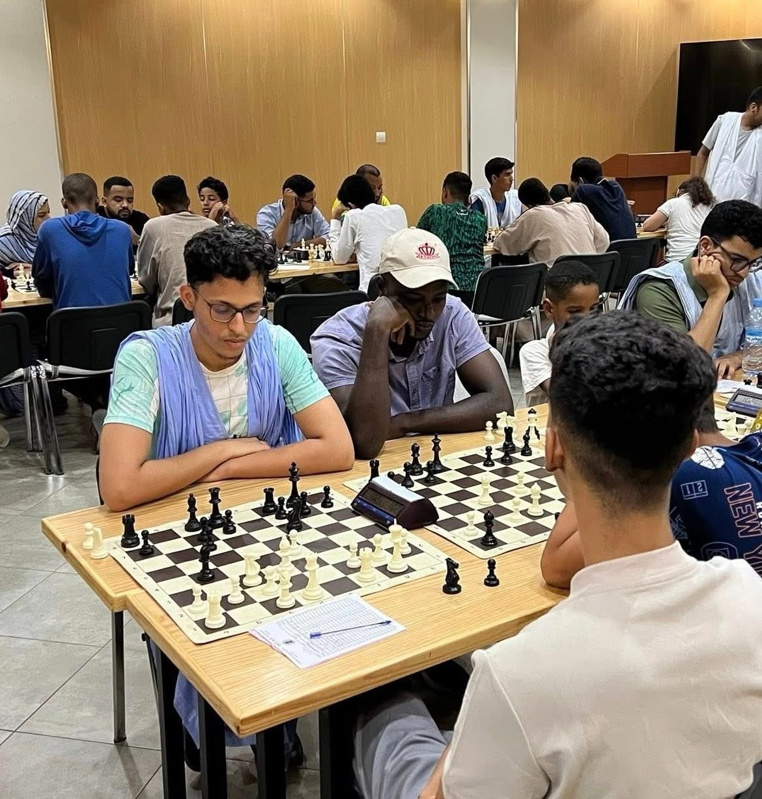

Qu'est-ce que c'est ?
Les échecs sont un jeu de stratégie pur. Sans hasard, chaque mouvement compte pour protéger son Roi et conquérir le camp adverse.
Découvrez l'essence et l'héritage du jeu des rois.
Un mélange unique d'art, de science et de sport.
Les échecs sont un jeu de stratégie pur. Sans hasard, chaque mouvement compte pour protéger son Roi et conquérir le camp adverse.
Né en Inde sous le nom de Chaturanga, le jeu a voyagé à travers la Perse et le monde Arabe avant de devenir le pilier de la culture européenne.
Il développe la patience, la pensée logique et la capacité à anticiper les conséquences de chaque décision dans la vie.

01-06-2026
NOUAKCHOT | MAURITANIE

10-06-2026
NOUKCHOOT | MAURITANIA